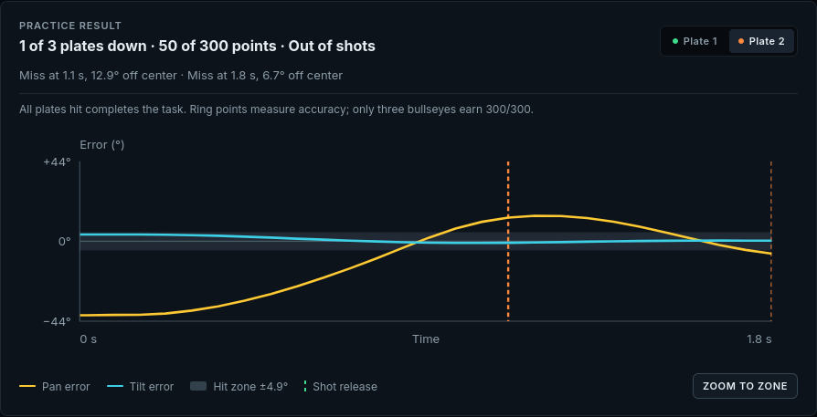

Camera & reticle
The main view shows the target relative to the aiming direction.
ME41006 · Learning notes · 03
Combine camera-based perception with motor control, then inspect alignment and shot outcomes.
The lessons evaluate visual alignment, target selection, shot placement, and tracking.
Align the turret using the target’s camera image.
Select the requested target among distractors.
Knock down three plates with four rounds; inspect shot placement.
Maintain alignment with a plate moving along a rail.
The main view, mask, and external view provide different evidence about the same run.
Any plate hit removes it. Ring points describe where the shot landed.

This run hit one plate for 50 points and used all four rounds.
Pan and tilt errors are plotted over time for the selected plate.
Vertical markers show shot release times. Trigger-to-release delay is 0.2 s.
Use the image and response record to explain the outcome before making the next change.
PERCEPTIONDoes the mask select the intended target throughout the attempt?
MOTIONHow does image alignment change as the turret moves?
SHOT PLACEMENTWhat do the release markers, angular error, and ring result show about each shot?